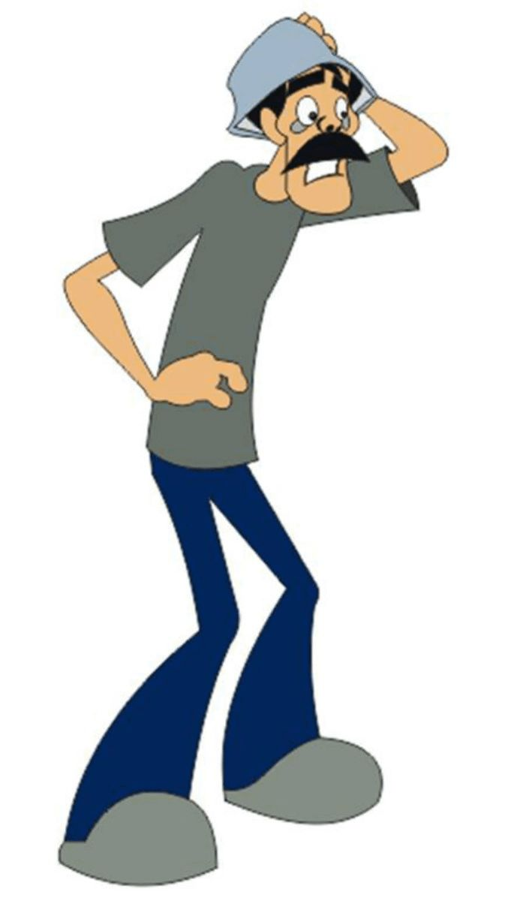

Seu Madruga (Don Ramón) — Um dos personagens mais queridos de “Chaves”
Interpretado por Ramón Valdés(No desenho original), Seu Madruga é o vizinho preguiçoso, porém carismático, da vila. Ele é conhecido por estar sempre fugindo do aluguel cobrado pelo Seu Barriga e por suas brigas hilárias com Dona Florinda.
Apesar de parecer rabugento, Seu Madruga tem um coração enorme e um carinho especial por sua filha, Chiquinha.
Frases marcantes do Seu Madruga:
- “A vingança nunca é plena, mata a alma e a envenena.”
- “Só não te dou outra porque...”
- “É que me escapuliu!”